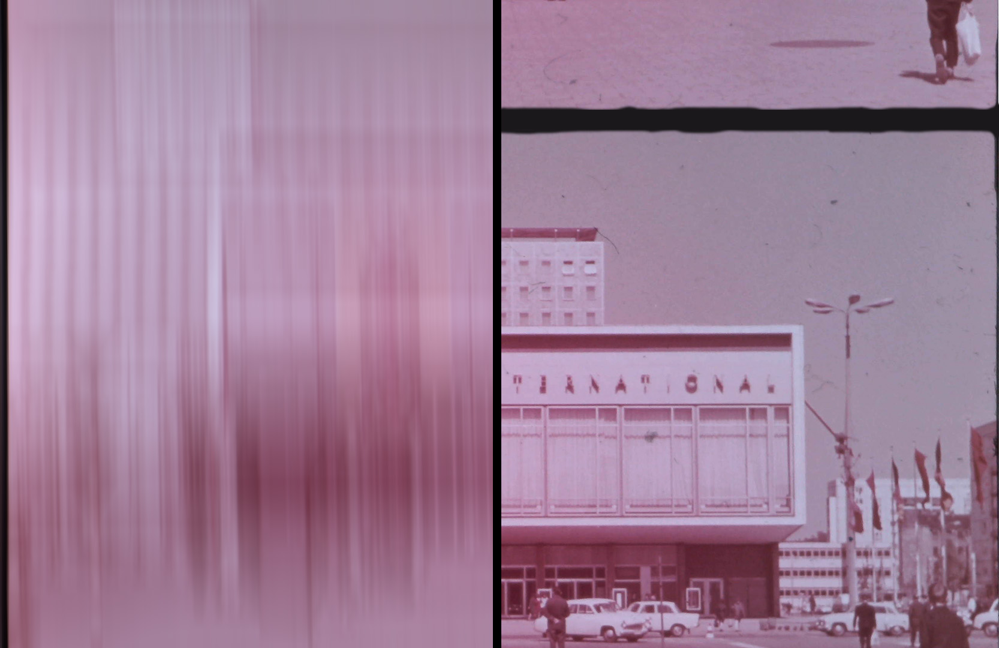

FPS (Film Phase Screen) 24/25

FPS (Film Phase Screen) 24/25 is a project that explores the
intersection between analog film and digital telecine. The project
focuses on the subtle, fleeting essence that "flies away" when one
medium switches to another. It highlights this volatile, imperceptible
element, which is only revealed by the direct confrontation of film
and telecine.
The technique employed involves a deliberate temporal shift in shutter
and projector rhythms between analog film and digital telecine. The
film strip runs continuously at a constant speed of around 10 cm/s,
equivalent to 24 frames per second. However, the mechanism for
projecting one frame after another has been eliminated, allowing
uninterrupted scrolling without intermittent shuttering. By capturing
this continuous projection on the camera, the camera shutter,
operating at 25 fps, reproduces the frame-by-frame display process.
The difference in speed between the two mechanisms results in a
regular image shift or framing effect.
The object of the project is a continuous, illegible film, embodying
blurred, elusive information. It reflects the paradox of the slow,
programmed disappearance of the film medium in favor of digital
convenience. The film medium has inherent disadvantages compared to
the ease of digital technology, and also carries a high risk of damage
or deterioration.
The subject of the film itself is of lesser value, as it is a personal
film made at home. However, it serves as testimony to a bygone
practice and way of life, raising historical and archaeological
questions in today's context. As a found film, it invokes the notion
of archaeology as a science that destroys its own study material. In
this installation, where the film image becomes invisible due to
saturation, the action of telecine can be compared to an excavation,
revealing the hidden element through the filter of a new shutter.
FPS (Film Phase Screen) 24/25, captures the essence of fleeting
moments, explores the interplay of different temporal modalities and
raises questions about the transition from analog to digital. It
invites viewers to contemplate the impermanence of materials, the
passage of time and the layers of meaning embedded in the act of
preservation and transformation.
Projection/installation, (digital) sound film, 80', 2018